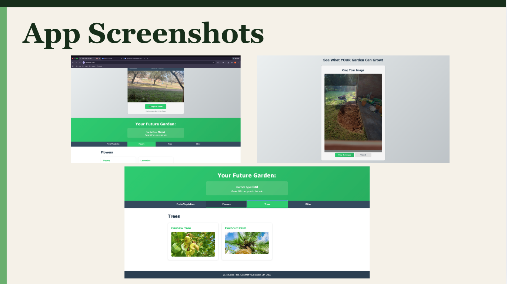
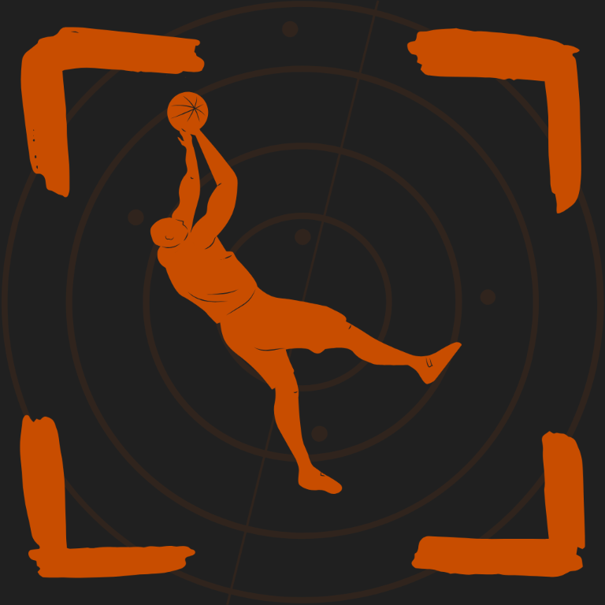

ParityMap [In Progress]
A web and mobile app designed to help shoppers understand effective product prices and monitor the broader climate around products. The planned system combines multiple data-ingestion pipelines and REST APIs with authentication and caching.
- React
- React Native
- FastAPI
- PostgreSQL
- Redis
- BeautifulSoup
Small Food Spot Finder
An iOS app for finding restaurants that aren't large chains, built with a custom mobile interface and data model. Its REST API filters Google Maps results alongside local records to recommend independent restaurants.
- SwiftUI
- FastAPI
- PostgreSQL
- Google Maps API
View on GitHub

YardScan
A mobile-friendly app that recommends suitable plants from a photo of a user's yard, built with a four-person hackathon team. I designed its architecture and database schema and trained a PyTorch CNN that achieved 96% soil-type accuracy.
- React
- FastAPI
- MySQL
- PyTorch
View on GitHub

Broke Shot Detector
A published iOS app that gives more than 50 users personalized basketball shooting analysis using computer vision. I built its image-processing API and a pose-landmark model that achieved over 80% test accuracy, and presented the work at the 2026 HBCU Chips conference.
- SwiftUI
- FastAPI
- OpenCV
- Docker
- PyTorch
- MediaPipe
View on GitHub